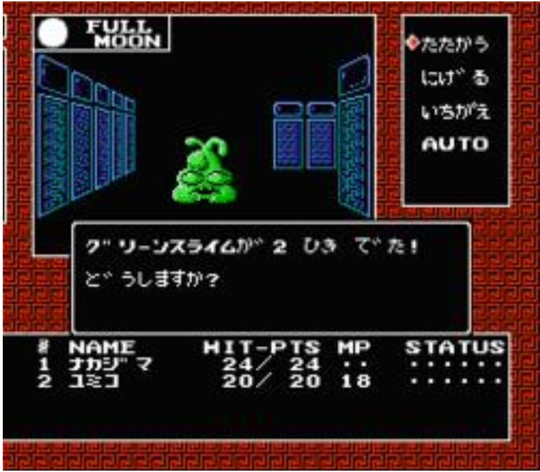

Welcome
This site explores the history of the Megami Tensei and Persona game franchises. It is designed for fans and newcomers who want to understand how these games began and evolved over time.
Digital Devil Story: Megami Tensei

Digital Devil Story: Megami Tensei was originally released in 1986 by Namco for the Famicom. It is based on a series of novels by Aya Nishitani.
Story Summary
The game follows Akemi Nakajima, a genius programmer who creates a system capable of summoning demons. Alongside Yumiko Shirasagi, he becomes caught in a supernatural conflict involving otherworldly forces.
As demons invade reality, Nakajima must use his own system to fight them, blurring the line between human control and demonic influence.